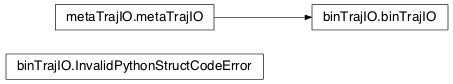

10.1.3. Time-Series IO¶
10.1.3.1. mosaic.abfTrajIO module¶
A TrajIO class that supports ABF1 and ABF2 file formats via abf/abf.py. Currently, only gap-free mode and single channel recordings are supported.
| Created: | 5/23/2013 |
|---|---|
| Author: | Arvind Balijepalli <arvind.balijepalli@nist.gov> |
| License: | See LICENSE.TXT |
| ChangeLog: |
- class mosaic.abfTrajIO.abfTrajIO(**kwargs)[source]¶
Bases: mosaic.metaTrajIO.metaTrajIO
Parameters: - In addition to metaTrajIO.__init__ args,
None
- readdata(fname)[source]¶
Read one or more files and append their data to the data pipeline. Set a class attribute Fs with the sampling frequency in Hz.
Parameters: - fname : list of data files to read
Returns: None
Errors: - SamplingRateChangedError : if the sampling rate for any data file differs from previous
10.1.3.2. mosaic.qdfTrajIO module¶
QDF implementation of metaTrajIO. Uses the readqdf module from EBS to read individual qdf files.
| Created: | 7/18/2012 |
|---|---|
| Author: | Arvind Balijepalli <arvind.balijepalli@nist.gov> |
| License: | See LICENSE.TXT |
| ChangeLog: |
- class mosaic.qdfTrajIO.qdfTrajIO(**kwargs)[source]¶
Bases: mosaic.metaTrajIO.metaTrajIO
In addition to the base class init, check if the feedback resistance (Rfb) and feedback capacitance (Cfb) are defined to convert qdf binary data into pA
Parameters: - In addition to metaTrajIO.__init__ args,
- Rfb : feedback resistance of amplifier
- Cfb : feedback capacitance of amplifier
- format : ‘V’ for voltage or ‘pA’ for current. Default is ‘V’
Returns: None
Errors: - InsufficientArgumentsError : if the mandatory arguments Rfb and Cfb are not set
- readdata(fname)[source]¶
Read one or more files and append their data to the data pipeline. Set a class attribute Fs with the sampling frequency in Hz.
Parameters: - fname : list of data files to read
Returns: None
Errors: - SamplingRateChangedError : if the sampling rate for any data file differs from previous
10.1.3.3. mosaic.binTrajIO module¶

Binary file implementation of metaTrajIO. Read raw binary files with specified record sizes
Created: 4/22/2013 Author: Arvind Balijepalli <arvind.balijepalli@nist.gov> License: See LICENSE.TXT ChangeLog:
- class mosaic.binTrajIO.binTrajIO(**kwargs)[source]¶
Bases: mosaic.metaTrajIO.metaTrajIO
Read a binary file that contains single channel ionic current data and calculate the current in pA after scaling by the amplifier scale factor and removing any offsets.
Parameters: - In addition to metaTrajIO.__init__ args,
- AmplifierScale : full scale of amplifier (in pA) that varies with the gain
- AmplifierOffset : current offset in the recorded data
- SamplingFrequency : sampling rate of data in the file in Hz
- HeaderOffset : ignore first ‘n’ bytes of the file for header (default: 0 bytes).
- PythonStructCode : Single character code for a python struct (see Python struct docs).
- Returns:
None
- Errors:
- InsufficientArgumentsError : if the mandatory arguments Rfb and Cfb are not set
10.1.3.4. mosaic.tsvTrajIO module¶

An implementation of metaTrajIO that reads tab separated valued (TSV) files
| Created: | 7/31/2012 |
|---|---|
| Author: | Arvind Balijepalli <arvind.balijepalli@nist.gov> |
| License: | See LICENSE.TXT |
| ChangeLog: |
- class mosaic.tsvTrajIO.tsvTrajIO(**kwargs)[source]¶
Bases: mosaic.metaTrajIO.metaTrajIO
Perform additional initialization checks. Check if kwarg ‘timeCol’ is set to a number.
In addition to metaTrajIO.__init__ args, :Optional Parameters:
- headers : If True, the first row is ignored (default: True)
- separator : set the data separator (defualt: ‘ ‘)
- Either:
- Fs : Sampling frequency in Hz. If set, all other options are ignored
and the first column in the file is assumed to be the current in pA.
- Or:
- nCols : number of columns in TSV file (default:2, first column is time
in ms and second is current in pA)
timeCol : explicitly set the time column (default: 0, first col)
currCol : explicitly set the position of the current column (default: 1)
If neither ‘Fs’ nor {‘nCols’, ‘timeCol’,’currCol’} are set then the latter is assumed with the listed default values.
- readdata(fname)[source]¶
Read a single TSV file and append its data to the data pipeline. Set/update a class attribute Fs with the sampling frequency in Hz.
Parameters: - fname : list of data files to read
Returns: None
Errors: - SamplingRateChangedError : if the sampling rate for any data file differs from previous